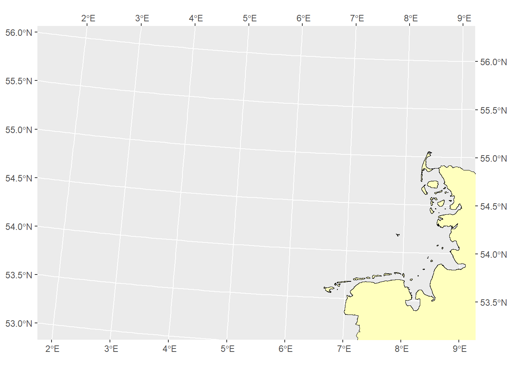
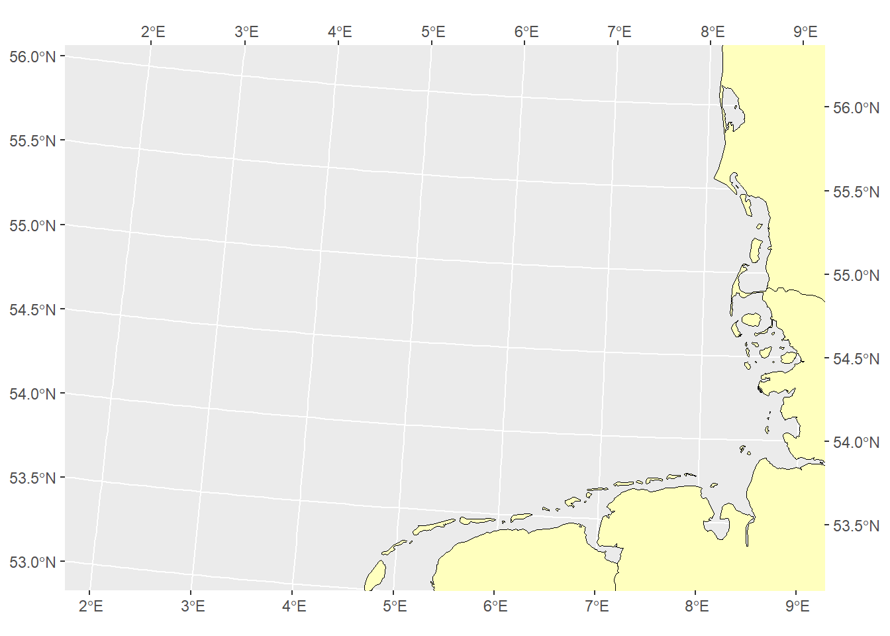
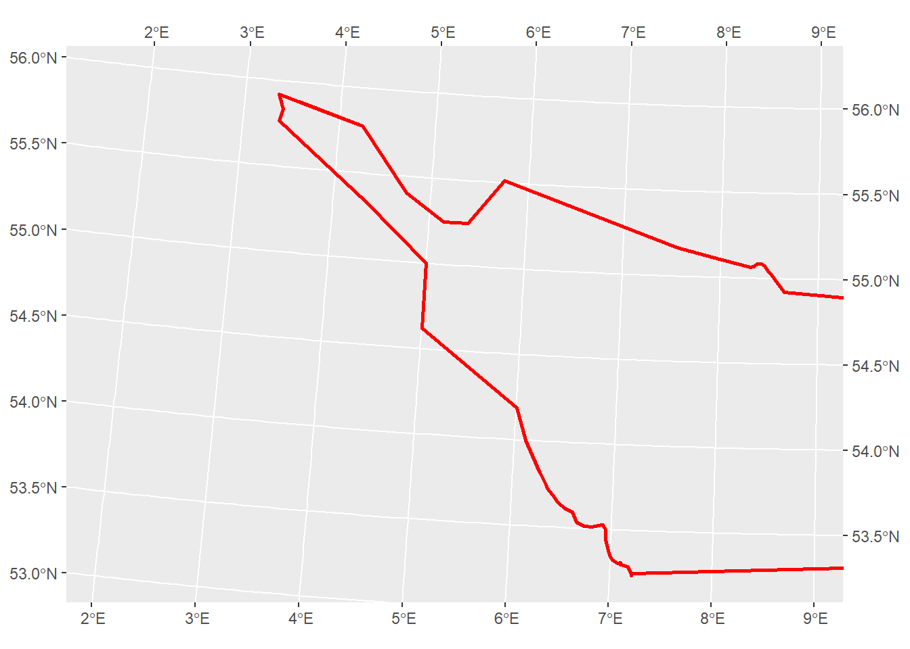
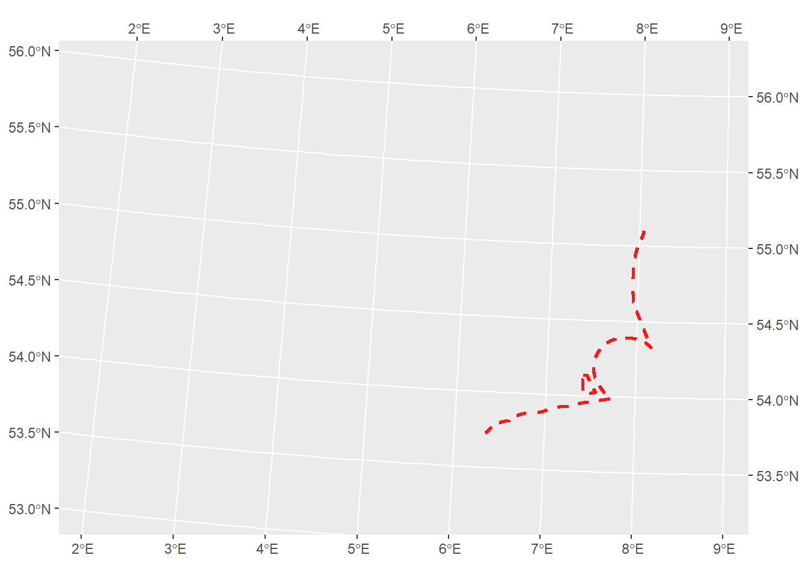
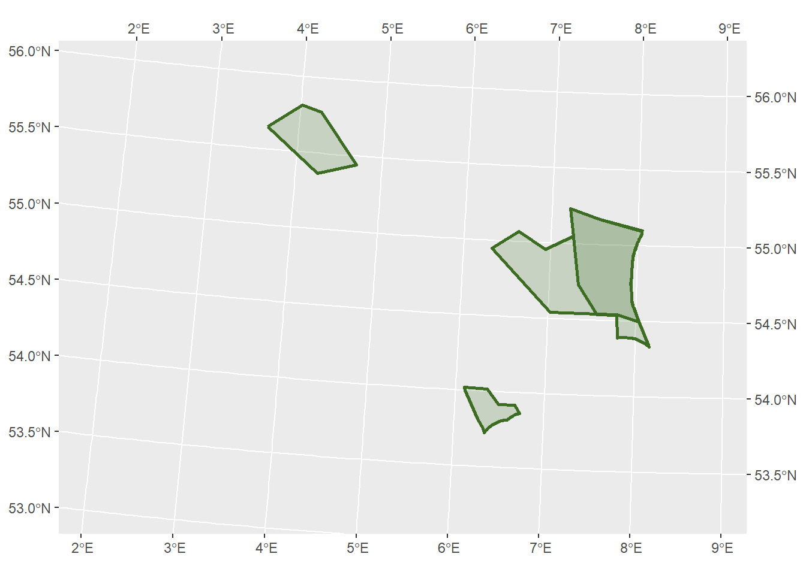
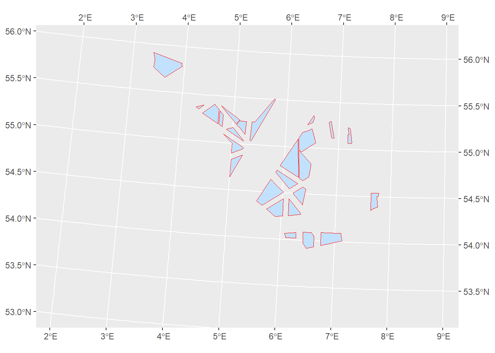
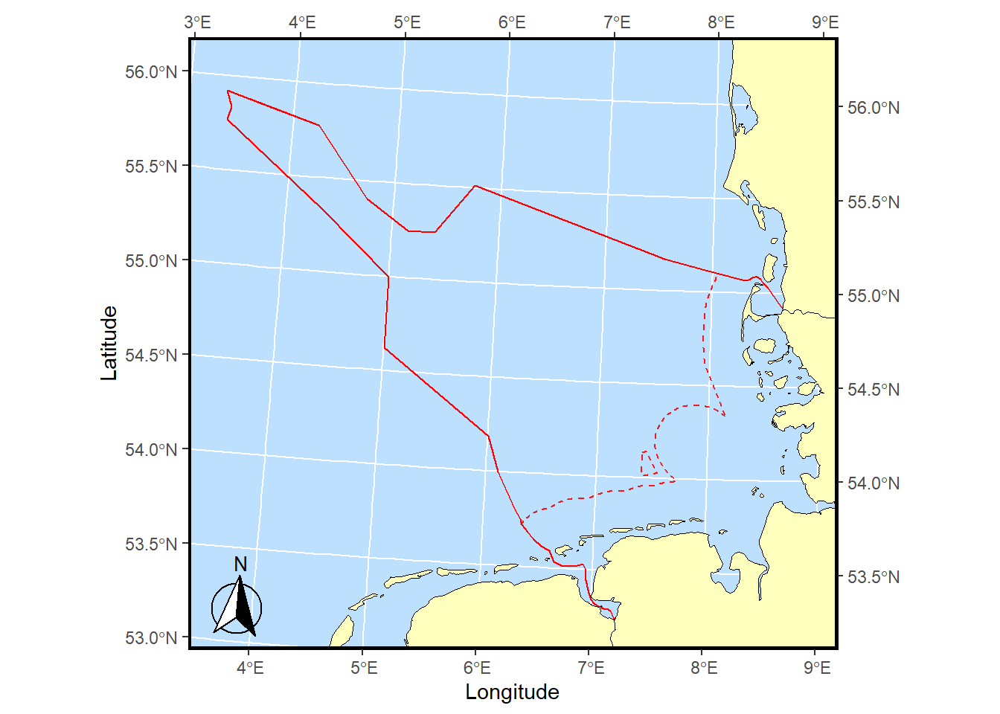
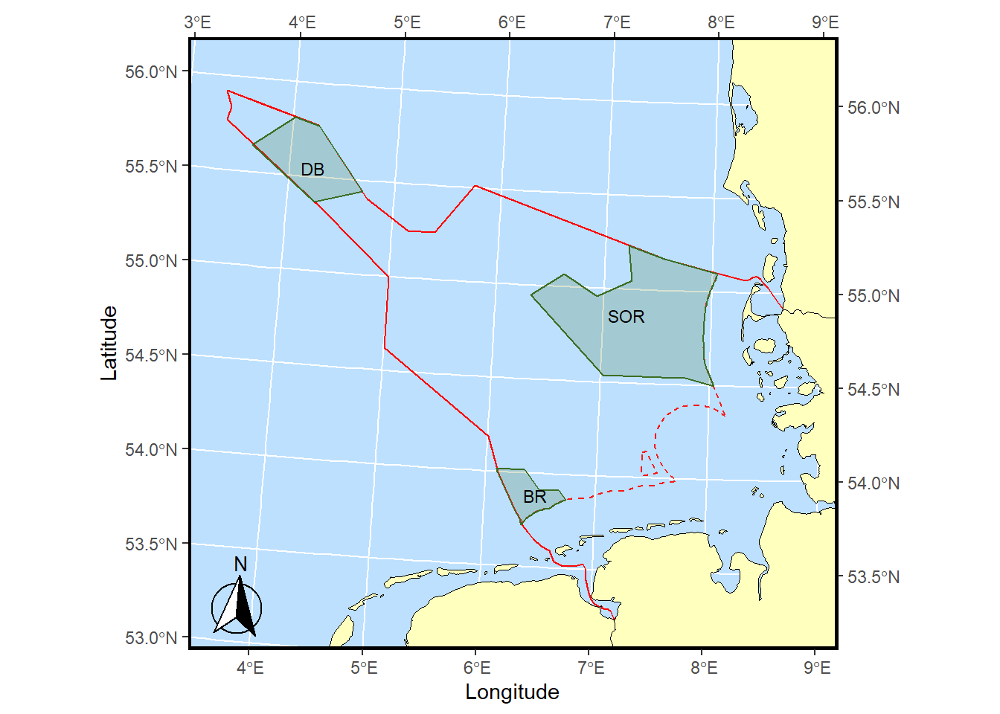
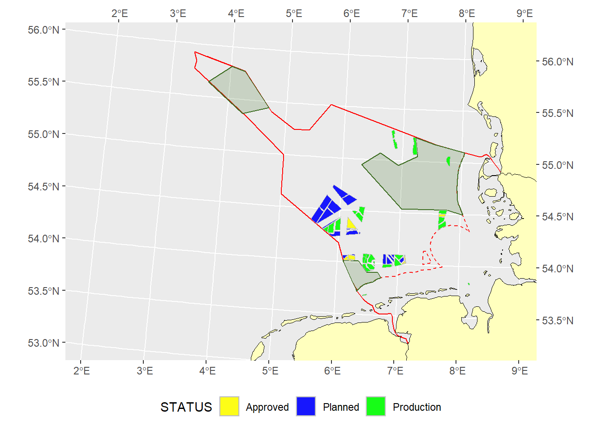
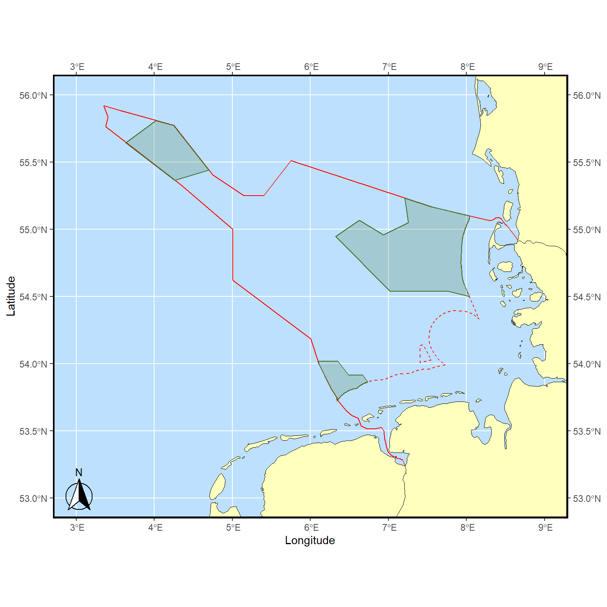

# install.packages("devtools")
devtools::install_github("MiriamLL/GermanNorthSea")GermanNorthSea
A package compiling shapefiles from the German North Sea.
German North Sea
The goal is provide easy access to shapefiles of the North Sea.
This package contains shapefiles from the German North Sea:
Datailed information and uses: https://github.com/MiriamLL/GermanNorthSea
Installation
library(GermanNorthSea)Examples
Base Maps
German Land
To download the original data go to: DIVA-GIS
Select the country and Administrative areas.
Germany<-GermanNorthSea::Germanyggplot2::ggplot()+ ggplot2::geom_sf(data = Germany, colour = 'black', fill = '#ffffbe')+
ggplot2::coord_sf(xlim = c(3790000,4250000), ylim = c(3350000,3680000),
label_axes = list(top = "E", left = "N", bottom = 'E', right='N'))
Europe
German_land<-GermanNorthSea::German_landggplot2::ggplot()+ ggplot2::geom_sf(data = German_land, colour = 'black', fill = '#ffffbe')+
ggplot2::coord_sf(xlim = c(3790000,4250000), ylim = c(3350000,3680000),
label_axes = list(top = "E", left = "N", bottom = 'E', right='N'))
German EEZ
To download the original data go to EMODnet>Select wind farms in the map.
Select Other Forms of Area Management/Designation>Click on the download icon on Exclusive Economic Zone.
Select Download Data, Select the country, and the Sector, and the Link should be ready to download.
German_EEZ<-GermanNorthSea::German_EEZggplot2::ggplot()+ ggplot2::geom_sf(data = German_EEZ,
colour = "red", fill= NA,alpha=0.9, lwd = 1)+
ggplot2::coord_sf(xlim = c(3790000,4250000), ylim = c(3350000,3680000),
label_axes = list(top = "E", left = "N", bottom = 'E', right='N'))
German Coast
German_coast<-GermanNorthSea::German_coastggplot2::ggplot()+
ggplot2::geom_sf(data = German_coast,
colour = "red", fill= '#bde0fe',alpha=0.9, lwd = 1,linetype="dashed")+
ggplot2::coord_sf(xlim = c(3790000,4250000), ylim = c(3350000,3680000),
label_axes = list(top = "E", left = "N", bottom = 'E', right='N'))
German Natura 2000
To download the original data go to GeoSeaPortal
The zip contains several shapefiles including NatureConservation
German_natura<-GermanNorthSea::German_natura
German_SCA<-GermanNorthSea::German_SCASCA + SPA
ggplot2::ggplot()+
ggplot2::geom_sf(data = German_natura, colour = "#3d6d22", fill= '#3d6d22',alpha=0.2, lwd = 1)+
ggplot2::geom_sf(data = German_SCA, colour = "#3d6d22", fill= '#3d6d22',alpha=0.2, lwd = 1)+
ggplot2::coord_sf(xlim = c(3790000,4250000), ylim = c(3350000,3680000),
label_axes = list(top = "E", left = "N", bottom = 'E', right='N'))
Human activities
Wind Farms
German_OWF<-GermanNorthSea::German_OWFggplot2::ggplot()+
ggplot2::geom_sf(data = German_OWF, colour = "#fe0001", fill= '#bde0fe',alpha=0.9, size=1)+
ggplot2::coord_sf(xlim = c(3790000,4250000), ylim = c(3350000,3680000),
label_axes = list(top = "E", left = "N", bottom = 'E', right='N'))
Maps
To visualize the maps use ggplot and ggspatial.
library(ggplot2)
library(ggspatial)Base Maps
German_land<-GermanNorthSea::German_land
German_EEZ<-GermanNorthSea::German_EEZ
German_coast<-GermanNorthSea::German_coastggplot() +
geom_sf(data = German_EEZ, colour = "red", fill= NA,alpha=0.9, lwd = 0.5)+
geom_sf(data = German_coast, colour = "red", fill= NA,alpha=0.9, lwd = 0.5,linetype="dashed")+
geom_sf(data = German_land, colour = 'black', fill = '#ffffbe')+
annotation_north_arrow(location ="bl", which_north = "true",
pad_x = unit(0.05, "in"),
pad_y = unit(0.05, "in"),
style = north_arrow_fancy_orienteering)+
theme(
legend.spacing.y = unit(0.05, 'cm'),
legend.text=element_text(size=10),
legend.background = element_rect(fill='transparent',colour ="transparent"),
legend.box.background = element_rect(fill='transparent',colour ="transparent"),
legend.key = element_rect(fill = "transparent", colour = "transparent"),
panel.background = element_rect(fill = '#bde0fe'))+
xlab('Longitude')+ylab('Latitude')+
theme(panel.border = element_rect(colour = "black", fill=NA, size=1.5))+
coord_sf(xlim = c(3900000,4250000), ylim = c(3350000,3680000),
label_axes = list(top = "E", left = "N", bottom = 'E', right='N'))Warning: The `size` argument of `element_rect()` is deprecated as of ggplot2 3.4.0.
ℹ Please use the `linewidth` argument instead.
Protected areas
German_natura<-GermanNorthSea::German_naturaGerman_natura$Abbreviations<-c('SOR','BR','DB')ggplot(German_natura) +
geom_sf(data = German_EEZ, colour = "red", fill= NA,alpha=0.9, lwd = 0.5)+
geom_sf(data = German_coast, colour = "red", fill= NA,alpha=0.9, lwd = 0.5,linetype="dashed")+
geom_sf(data = German_land, colour = 'black', fill = '#ffffbe')+
geom_sf(data = German_natura, colour = "#3d6d22", fill= '#3d6d22',alpha=0.2, lwd = 0.5)+
geom_sf_text(aes(label=Abbreviations),size=3,family="sans")+
annotation_north_arrow(location ="bl", which_north = "true",
pad_x = unit(0.05, "in"),
pad_y = unit(0.05, "in"),
style = north_arrow_fancy_orienteering)+
theme(
legend.spacing.y = unit(0.05, 'cm'),
legend.text=element_text(size=10),
legend.background = element_rect(fill='transparent',colour ="transparent"),
legend.box.background = element_rect(fill='transparent',colour ="transparent"),
legend.key = element_rect(fill = "transparent", colour = "transparent"),
panel.background = element_rect(fill = '#bde0fe'))+
xlab('Longitude')+ylab('Latitude')+
theme(panel.border = element_rect(colour = "black", fill=NA, size=1.5))+
coord_sf(xlim = c(3900000,4250000), ylim = c(3350000,3680000),
label_axes = list(top = "E", left = "N", bottom = 'E', right='N'))
Human activities
Wind Farms
OWF_EMODnet<-GermanNorthSea::OWF_EMODnetggplot(OWF_EMODnet)+
geom_sf(data = German_EEZ,colour = "red", fill= NA,alpha=0.9, lwd = 0.5)+
geom_sf(data = German_coast,colour = "red", fill= '#bde0fe',alpha=0.9, lwd = 0.5,linetype="dashed")+
geom_sf(data = German_land, colour = 'black', fill = '#ffffbe')+
geom_sf(data = German_natura, colour = "#3d6d22", fill= '#3d6d22',alpha=0.2, lwd = 0.5)+
geom_sf(data = OWF_EMODnet, aes(fill= STATUS), colour = "grey",alpha=0.9, size=0.5)+
scale_fill_manual(values = c("yellow", "blue", "green"))+
coord_sf(xlim = c(3790000,4250000), ylim = c(3350000,3680000),
label_axes = list(top = "E", left = "N", bottom = 'E', right='N'))+
theme(legend.position = 'bottom')
Other CRS
For using other CRS, you can use the function st_transform from the package sf.
library(sf)Linking to GEOS 3.12.1, GDAL 3.8.4, PROJ 9.3.1; sf_use_s2() is TRUEGerman_EEZ<-st_transform(German_EEZ, 4326)
German_coast<-st_transform(German_coast, 4326)
German_land<-st_transform(German_land, 4326)
German_natura<-st_transform(German_natura, 4326)ggplot()+
geom_sf(data = German_EEZ, colour = "red", fill= NA,alpha=0.9, lwd = 0.5)+
geom_sf(data = German_coast, colour = "red", fill= NA,alpha=0.9, lwd = 0.5,linetype="dashed")+
geom_sf(data = German_land, colour = 'black', fill = '#ffffbe')+
geom_sf(data = German_natura, colour = "#3d6d22", fill= '#3d6d22',alpha=0.2, lwd = 0.5)+
ggspatial::annotation_north_arrow(location ="bl", which_north = "true",
pad_x = unit(0.05, "in"),
pad_y = unit(0.05, "in"),
style = north_arrow_fancy_orienteering)+
theme(
legend.spacing.y = unit(0.05, 'cm'),
legend.text=element_text(size=10),
legend.background = element_rect(fill='transparent',colour ="transparent"),
legend.box.background = element_rect(fill='transparent',colour ="transparent"),
legend.key = element_rect(fill = "transparent", colour = "transparent"),
panel.background = element_rect(fill = '#bde0fe'))+
xlab('Longitude')+ylab('Latitude')+
theme(panel.border = element_rect(colour = "black", fill=NA, size=1.5))+
coord_sf(xlim = c(3,9), ylim = c(53,56),
label_axes = list(top = "E", left = "N", bottom = 'E', right='N'))
Citations
For referencing the shapefiles please use the original resources and links provided in the githubpage.